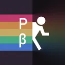

Portal Series BETA Research
The community/research Discord associated with P2BL.
About PSBR
Portal Series BETA Research (PSBR) is a community-focused Discord server dedicated to researching, discussing, documenting, and preserving beta and development material from Portal and related Valve/source projects.
The community provides a place for researchers and enthusiasts to share findings, discuss technical information, collaborate on projects, and explore Portal development history.
Live server rules, channels, roles, staff information, and community organization can change over time. The Discord server itself is the current source for those details.
PSBR & P2BL
P2BL is a separate software project closely associated with the PSBR research community. P2BL is intended to support historical Portal 2 beta research and related technical workflows.
P2BL is a project/tool; PSBR is the community/research server.